Request Dashboard
An Interaction Design Project

About this Project
The Request Dashboard is the result of 4 months of research, brainstorming and iteration. This semester-long group project was done during an interaction design course, alongside 3 other people. In collaboration with a local escape room business, my team and I used interaction design methods to come up with a solution that reduces cognitive load and improves task coordination by providing a clear, shared system for prioritizing and delegating tasks.

Project Background
This project was done as a group project for an SFU interaction design course (IAT333) in Spring 2025. The goal of the course was to learn the entire interaction design process and its methods, then carrying out those methods with a real local business. My team and I collaborated with a local escape rooms business for 4 months, who was passionate about maximizing customer experience but had issues regarding employee task coordination.
Process
The project started with ethnographic research and ended with a solution that was iterated over several times. We employed industry standard design methodology, including Google's Design Sprint Methodology.
4 Months of Research, Brainstorming and Iteration
During the length of the project, we worked closely with the business to provide a design solution for them. Using design methods such as those outlined in Google’s Design Sprint Framework, we spent 4 months designing, brainstorming and iterating over multiple ideas, designs and solutions. In the middle of the project, we held a participatory design workshop, which I took lead in organizing, and especially referenced co design methodologies from IDEO.
We began with research
Ethnography, personas, etc.
Discarded several concepts
Iteration is key after all
Faced a lot of critique
From classmates and our professor

And iterated over and over
and over and over...
The Final Product
The final result of the project was the Request Dashboard, a lightweight mobile app that acts as a shared task request list for all staff. Our goal was to minimize uncertainty among several members regarding whether they need to perform the task. My team and I built a working web-based prototype and held an interactive demo of the application. Afterwards, a final report containing our rationale and documentation of the project was produced.
Final Mockups

Report and Rationale
 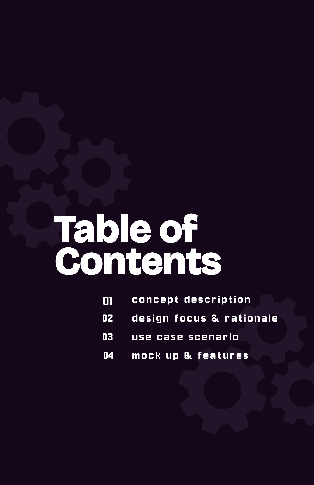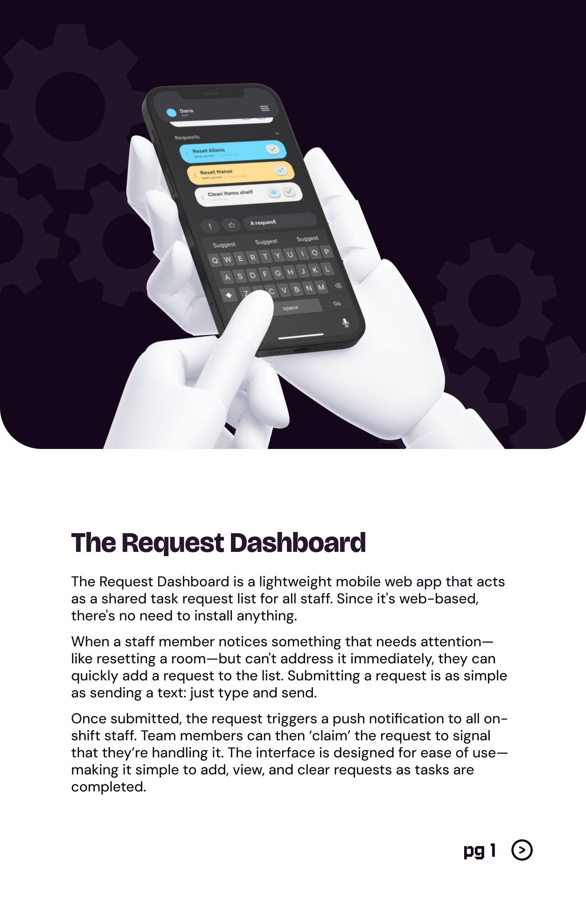
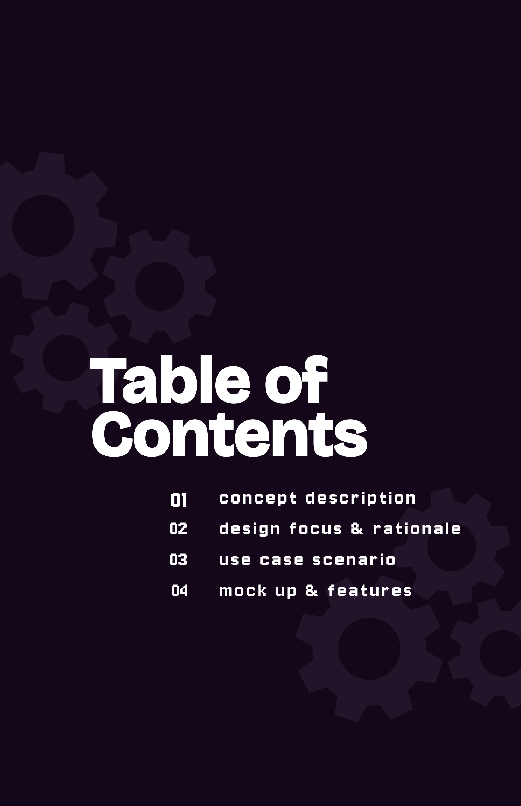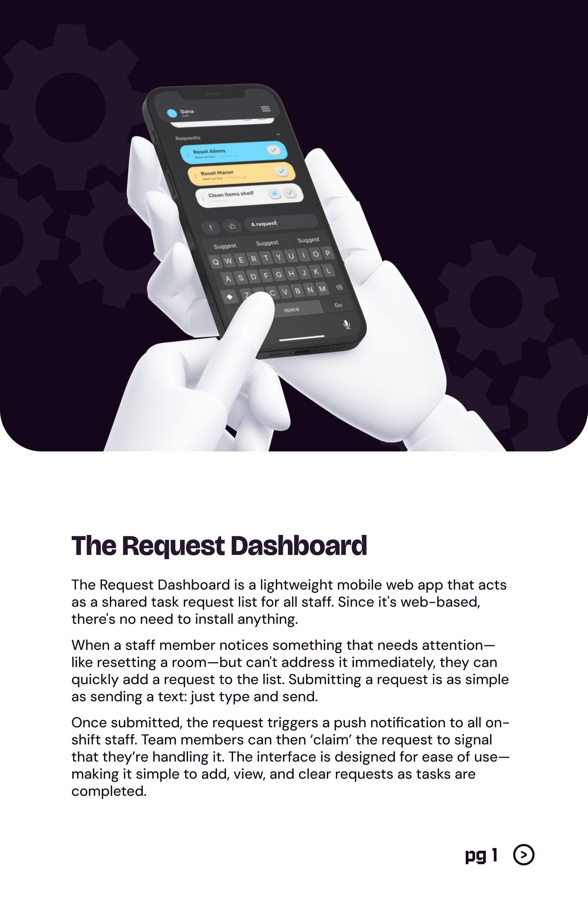 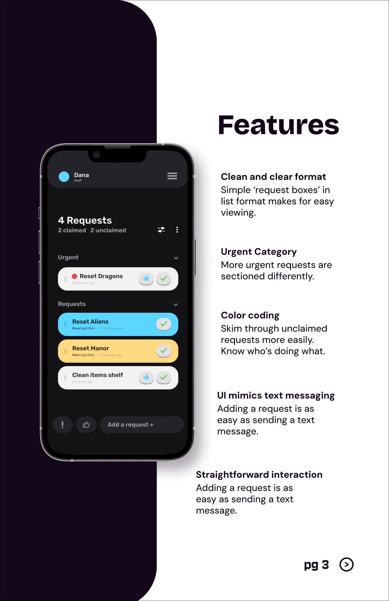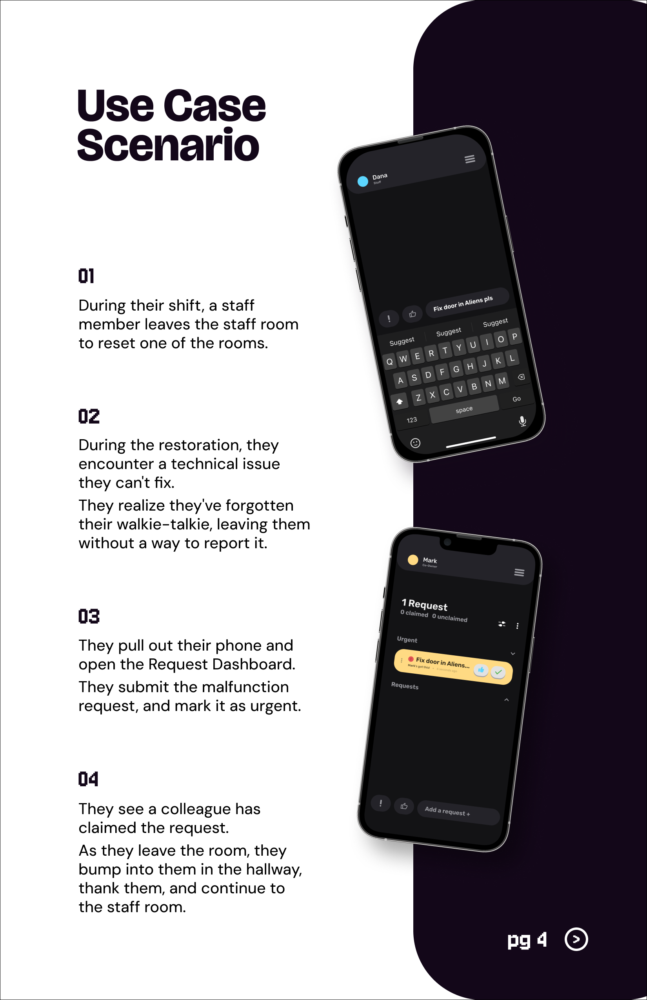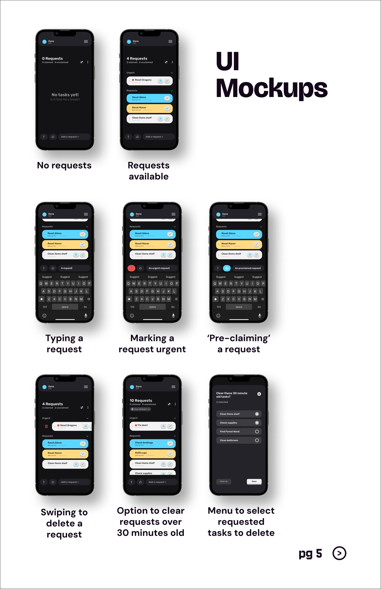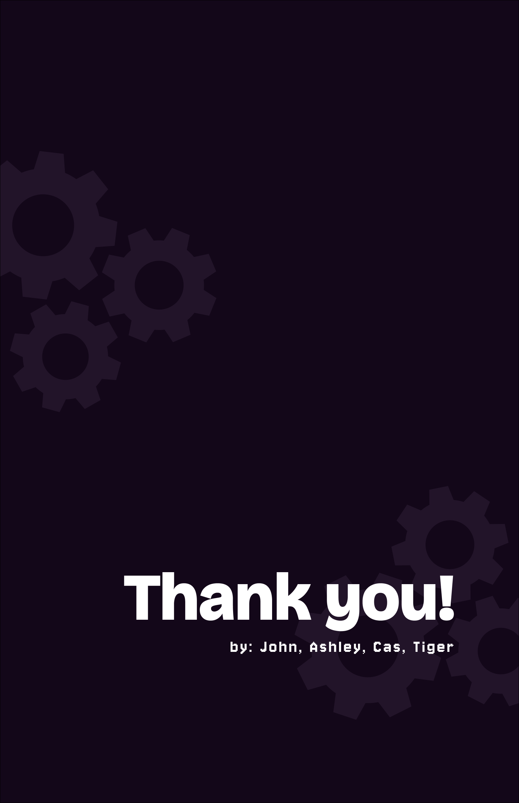
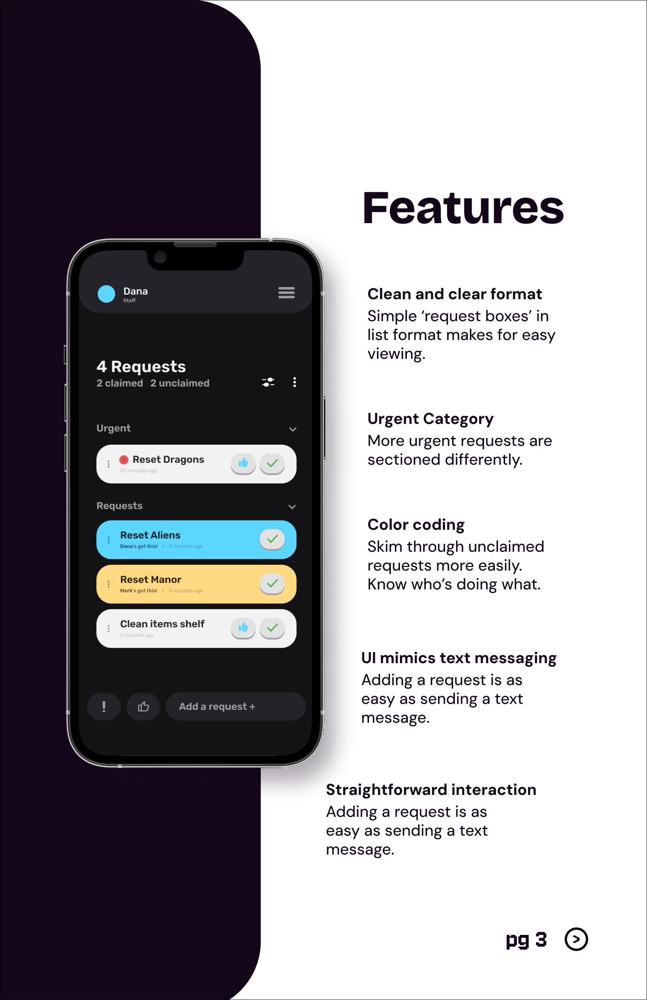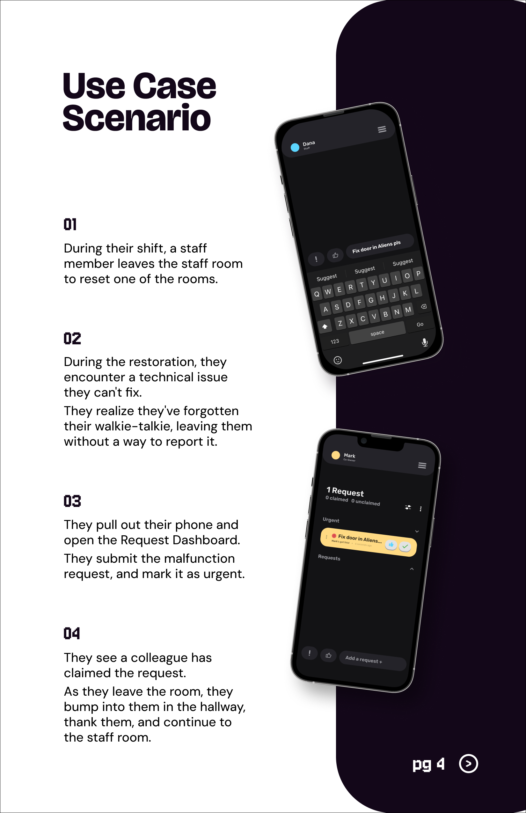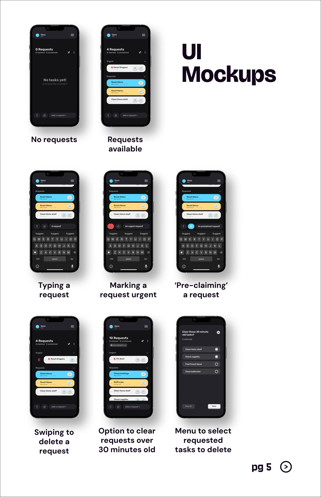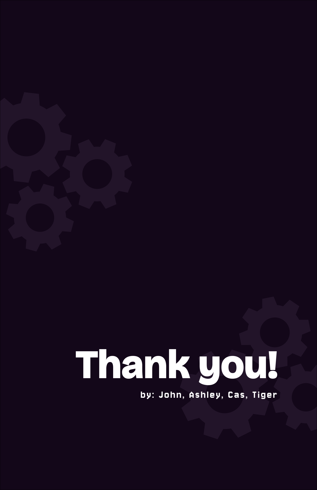